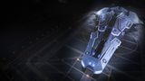

Оружейные точки
2H · 1L · 2M · 2S (без огромного орудия AX)
Тот же боевой корабль с 666 брони и щитом ~516 МДж, который лидирует в обычных боях, становится почти неуязвимым в боях с таргоидами: два военных отсека под усилители модулей Стражей, восемь внешних креплений, вместительные отсеки и хорошая для тяжёлого корабля манёвренность позволяют удерживать пушки Гаусса на сердцах перехватчика. Баллы снимают лишь за то, что не существует оружия AX огромного класса: фирменные огромные точки используются не на полную мощность. Кроме того, корпус массой 900 т не может уходить от разрядов таргоидов так, как средний корабль. А для покупки ещё придётся дослужиться до контр-адмирала Федерации.

Корабль получает оценку пригодности от 1 до 100 в полностью улучшенной сборке для этой роли, в сравнении со всеми другими кораблями той же роли. См. методику оценки кораблей.
Отправьте лучший боевой корабль игры против таргоидов и получите один из самых живучих кораблей AX. У Federal Corvette 666 брони, щит ~516 МДж, два военных отсека под усилители модулей Стражей, восемь внешних креплений и одиннадцать дополнительных отсеков. Этого хватает, чтобы выдерживать едкий урон, переживать разряды перехватчиков и продолжать огонь, пока более лёгкие корабли уже уходят на ремонт. Неожиданно высокая манёвренность для корпуса массой 900 т позволяет удерживать пушки Гаусса на открытом сердце намного лучше других тяжёлых кораблей.
Почему его оценка — 86, а не первое место среди кораблей AX? Всё просто: оружия AX огромного класса не существует. Две огромные точки Corvette вмещают лишь большие или меньшие орудия AX или Стражей. Поэтому его фирменное преимущество в огневой мощи сокращается против врага, на котором нельзя использовать потенциал больших точек полностью. И как бы хорошо он ни разворачивался для тяжёлого корабля, уйти от разряда и роя он не сможет так, как Chieftain или Krait. Он выдерживает больше урона, чем любой средний корабль AX, а по живучести сравним с Type-10. У Cutter чуть сильнее щит, а манёвренные средние корабли набирают больше баллов благодаря способности уходить от ударов.
Затяжные бои с таргоидами: удержание позиции в зонах конфликтов AX, прикрытие звена с принятием урона на себя, операции у Титанов и в Мальстрёме, где важна живучесть, и любые бои, которые вы собираетесь выиграть на выносливости, а не на уклонении.
Четыре причины считать Corvette тяжёлым охотником на таргоидов:
Поскольку оружия AX огромного класса нет, на двух огромных точках Corvette стоят большие орудия AX или Стражей: мощные, но не те огромные орудия, что обеспечивают лидерство в обычном бою. Кроме того, нужен ранг контр-адмирала Федерации, большая площадка и ~188 млн кр. только за корпус. Несмотря на хорошую манёвренность, корабль слишком тяжёл, чтобы уходить от разрядов перехватчика. Его ставка — живучесть и огонь на износ, а не уклонение.
Тяжёлый корабль AX: 666 брони, два военных отсека и восемь внешних креплений делают его почти неуязвимым. Оценка ограничена 86 баллами, поскольку корпус массой 900 т не может уходить от разрядов таргоидов как средние корабли.
Итоговая 86/100 оценка складывается из критериев, расположенных по приоритетности для боя с таргоидами. У каждого есть свой вес (доля от 100); корабль получает часть баллов по сравнению со всеми соперниками. В сумме они дают итоговую оценку.
| Критерий | Баллы | Почему столько |
|---|---|---|
| Точки под пушки Гаусса | 20/25 | Семь точек (2H 1L 2M 2S), но пушки Гаусса бывают только среднего класса. Значит, поражать сердца могут орудия лишь на двух средних точках, тогда как у Gunship их четыре. Огромных орудий AX нет, поэтому обе огромные точки заняты большими улучшенными многоствольными пушками AX. |
| Теплоёмкость и контроль нагрева | 18/20 | Корпус массой 900 т и большая площадь поверхности сглаживают скачки нагрева от пушек Гаусса. Из восьми внешних креплений два занимают теплоотводные катапульты, ещё одно — катапульта для нейтрализации едкого вещества. Форсированная силовая установка G5 использует «Распределение тепла», чтобы отводить излишек. |
| Броня и запас отсеков под усилители | 19/20 | Уступает лишь Cutter: 666 базовой брони, ~516 МДж щита, одиннадцать дополнительных и два военных отсека класса 5 под усилители модулей Стражей (MRP). С инженерными улучшениями показатели достигают ~2,000+ МДж щита и ~4,000+ эффективной брони. |
| Манёвренность | 20/25 | 198/257 м/с и достаточно быстрый разворот, чтобы удерживать пушки Гаусса на открытом сердце. Но из-за массы ~900 т Corvette принимает разряды перехватчика на себя. Манёвренные Chieftain и Krait получают больше баллов, потому что уклонение спасает жизнь. Это главный ограничивающий фактор. |
| Защита от едкого вещества и вспомогательное оснащение | 9/10 | Восемь внешних креплений и вместительные отсеки позволяют взять весь набор поддержки AX сразу: сканер ксеносов, катапульту для нейтрализации едкого вещества, контроллер обеззараживающих дронов, точечную оборону и усилители Стражей HRP/MRP, которые повышают стойкость корпуса к едкому веществу. |
| Взвешенный итог | 86/100 | Совпадает с итоговой оценкой пригодности корабля для этой роли. |
Вес каждого критерия отражает редакционную расстановку приоритетов роли, а не формулу игры. Длина полосы показывает, какую долю баллов по критерию заработал корабль. Длинные полосы дали основную часть оценки, короткие показывают, где он потерял баллы. См. методику оценки кораблей.
Во всех таблицах корабли оцениваются именно для боя с таргоидами и разделены по размеру посадочной площадки. Столбец Оружейные точки показывает набор оружейных точек, от которого зависит число пушек Гаусса; оценка пригодности по шкале от 1 до 100 та же, что и на остальных страницах.
| Корабль | Класс | Оружейные точки | Плюсы и минусы | Оценка |
|---|---|---|---|---|
| Imperial Cutter | Большая | 1H 2L 4M | Оценка выше; точки под пушки Гаусса; контроль нагреваМанёвренность | 90 |
| Anaconda | Большая | 1H 3L 2M 2S | Оценка выше; точки под пушки Гаусса; запас брониМанёвренность | 88 |
| Federal Corvette этот | Большая | 2H 1L 2M 2S | — этот корабль (для сравнения) | 86 |
| Type-10 Defender | Большая | 4L 3M 2S | Запас брони; защита от едкого веществаМанёвренность | 86 |
Оценены 4 корабля AX для больших площадок. Лидер — Imperial Cutter (90). Из этой таблицы проще всего выбрать альтернативу: все корабли садятся там же, где и Corvette.
| Корабль | Класс | Оружейные точки | Плюсы и минусы | Оценка |
|---|---|---|---|---|
| Alliance Chieftain | Средняя | 2L 1M 3S | Оценка выше; манёвренность; контроль нагреваТочки под пушки Гаусса | 90 |
| Krait Mk II | Средняя | 3L 2M | Оценка выше; точки под пушки Гаусса; манёвренностьЗапас брони | 89 |
| Alliance Challenger | Средняя | 1L 3M 3S | Оценка выше; запас брони; защита от едкого веществаМанёвренность | 88 |
| Corsair | Средняя | 3L 3M | Точки под пушки Гаусса; манёвренностьОценка ниже; запас брони | 84 |
| Krait Phantom | Средняя | 2L 2M | Манёвренность; контроль нагреваОценка ниже; запас брони | 84 |
| Python Mk II | Средняя | 4L 2M | Точки под пушки Гаусса; защита от едкого веществаОценка ниже; запас брони | 84 |
| Federal Gunship | Средняя | 1L 4M 2S | Запас брони; защита от едкого веществаОценка ниже; манёвренность | 82 |
| Python | Средняя | 3L 2M | Запас брони; защита от едкого веществаОценка ниже; манёвренность | 80 |
| Alliance Crusader | Средняя | 1L 2M 3S | Запас брони; контроль нагреваОценка ниже; манёвренность | 79 |
| Federal Assault Ship | Средняя | 2L 2M | Манёвренность; запас брониОценка ниже; точки под пушки Гаусса | 77 |
| Federal Dropship | Средняя | 1L 4M | Защита от едкого вещества; точки под пушки ГауссаОценка ниже; манёвренность | 73 |
| Mamba | Средняя | 1H 2L 2S | Манёвренность; контроль нагреваОценка ниже; запас брони | 70 |
| Fer-de-Lance | Средняя | 1H 4M | Манёвренность; точки под пушки ГауссаОценка ниже; запас брони | 68 |
Среди кораблей AX для средних площадок оценены 13 моделей. Лидер — Alliance Chieftain (90). Их корпуса дешевле и садятся на площадки меньшего размера. По цене они выигрывают у Corvette, но относятся к другому классу площадки.
| Корабль | Класс | Оружейные точки | Плюсы и минусы | Оценка |
|---|---|---|---|---|
| Kestrel Mk II | Малая | 3L 2S | Манёвренность; точки под пушки ГауссаОценка ниже; защита от едкого вещества | 60 |
| Cobra Mk V | Малая | 3M 2S | Манёвренность; точки под пушки ГауссаОценка ниже; защита от едкого вещества | 50 |
| Vulture | Малая | 2L | Запас брони; манёвренностьОценка ниже; точки под пушки Гаусса | 44 |
Среди кораблей AX для малых площадок оценены 3 модели. Лидер — Kestrel Mk II (60). Их корпуса дешевле и садятся на площадки меньшего размера. По цене они выигрывают у Corvette, но относятся к другому классу площадки.
При цене ~188 млн кр. Corvette — один из самых дорогих корпусов в игре. Для покупки нужно звание контр-адмирала Федерации, до которого долго подниматься по цепочке Dropship→FAS→Gunship. Полная сборка с оружием Стражей и AX, тяжёлым щитом и двумя уровнями усилений стоит ~435 млн кр. в классе A, свыше ~480 млн кр. с инженерными улучшениями. На страховку закладывайте ~22 млн кр.
Это корабль AX для поздней стадии игры, не для новичка. Если у вас уже есть звание для боевого Corvette, переоснащение в AX — естественный шаг: получится корабль, который почти невозможно уничтожить в бою с таргоидами. Если ещё учитесь, начните с более дешёвого и прощающего ошибки Chieftain.
~480 млн кр. с улучшениями и время на разблокировку технологий Стражей дают самый живучий боевой корабль AX после Cutter. Требование звания контр-адмирала и страховка ~22 млн кр. — реальная цена входа. Это корабль для командиров, уже заслуживших звание.
Тяжёлый корабль AX: большие улучшенные многоствольные пушки AX на огромных точках (огромных орудий AX нет), пушки Гаусса Стражей на средних для поражения сердец, усилители Стражей в обоих военных и вместительных дополнительных отсеках, восемь внешних креплений и отвлекающий истребитель. Начальный вариант — голый корпус. Класс A добавляет разблокированное оснащение AX. Инженерные улучшения усиливают щиты и корпус, помогают контролировать нагрев и повышают подвижность.
| Отсек | Начальная · только покупка | Класс A · без улучшений | С инженерными улучшениями | Примечания |
|---|---|---|---|---|
| Оружейные точки | ||||
| Огромная 1 | — | 3C Улучшенная многоствольная пушка AX (на подвижном подвесе) | (нет чертежа улучшения) | Огромных орудий AX нет. Большая улучшенная многоствольная пушка AX не использует потенциал огромной точки полностью. Подвижный подвес помогает удерживать огонь на маневрирующем перехватчике. |
| Огромная 2 | — | 3C Улучшенная многоствольная пушка AX (на подвижном подвесе) | (нет чертежа улучшения) | Вторая большая улучшенная многоствольная пушка AX занимает другую огромную точку. Оружие AX и Стражей не улучшается у инженеров, так что это предел. |
| Большая 1 | — | 3C Улучшенная многоствольная пушка AX (на подвижном подвесе) | (нет чертежа улучшения) | Третья улучшенная многоствольная пушка AX для продолжительного урона по корпусу таргоида, пока его сердце прикрыто. |
| Средняя 1 | — | 2B Пушка Гаусса Стражей (фиксированная) | (нет чертежа улучшения) | Пушка Гаусса Стражей поражает сердца. Установка только фиксированная, поэтому стабильность полёта Corvette особенно полезна. |
| Средняя 2 | — | 2B Пушка Гаусса Стражей (фиксированная) | (нет чертежа улучшения) | Вторая пушка Гаусса удваивает урон по открытому сердцу. Сильный всплеск тепла гасите теплоотводами. |
| Малая 1 | — | 1D Осколочная пушка Стражей (фиксированная) | (нет чертежа улучшения) | Осколочная пушка Стражей наносит на ближней дистанции большой урон открытым сердцам и корпусу. |
| Малая 2 | — | 1D Осколочная пушка Стражей (фиксированная) | (нет чертежа улучшения) | Вторая осколочная пушка дополняет батарею орудий Стражей на малых точках. |
| Внешние крепления | ||||
| Крепление 1 | — | 0C Сканер ксеносов | (нет чертежа улучшения) | Улучшенный Ксено-сканер выявляет сердца перехватчика и его разновидность. Обязательный модуль AX; инженерных улучшений нет. |
| Крепление 2 | — | 0I Катапульта для нейтрализации едкого вещества | G1 Увеличенный боезапас (без экспериментального эффекта) | Необязательно, низкий приоритет: увеличенный боезапас добавляет заряды нейтрализации. Снимает эффект едкого вещества в боях с таргоидами. |
| Крепление 3 | — | 0I Теплоотводная катапульта | G1 Увеличенный боезапас (без экспериментального эффекта) | Необязательно, низкий приоритет: увеличенный боезапас добавляет заряды теплоотвода. Сбрасывает тепло при скрытном ходе и помогает восстановить охлаждение «Тепловым отводом». |
| Крепление 4 | — | 0I Теплоотводная катапульта | G1 Увеличенный боезапас (без экспериментального эффекта) | Необязательно, низкий приоритет: увеличенный боезапас добавляет заряды теплоотвода. Сбрасывает тепло при скрытном ходе и помогает восстановить охлаждение «Тепловым отводом». |
| Крепление 5 | — | 0A Усилитель щита | G5 Термостойкость + Суперконденсаторы | Термостойкий усилитель защищает щит от теплового и едкого урона таргоидов. |
| Крепление 6 | — | 0A Усилитель щита | G5 Термостойкость + Суперконденсаторы | Второй термостойкий усилитель повышает суммарную стойкость щита — главное преимущество в бою AX. |
| Крепление 7 | — | 0A Усилитель щита | G5 Усиленная конструкция + Суперконденсаторы | После двух усилителей на сопротивление «Усиленная конструкция» даёт чистые МДж вместо дополнительного сопротивления. |
| Крепление 8 | — | 0I Точечная оборона | G1 Увеличенный боезапас (без экспериментального эффекта) | Необязательно, низкий приоритет: увеличенный боезапас добавляет выстрелы. Точечная оборона сбивает подлетающие ракеты и торпеды. |
| Основные модули | ||||
| Обшивка | Лёгкий сплав | Композит военного класса | G5 Усиленная конструкция + Дополнительное бронирование | |
| Силовая установка | 8E Силовая установка | 8A Силовая установка | G5 Форсирование + Распределение тепла | Пушки Гаусса, тяжёлый щит и банки питания требуют много энергии. Форсирование добавляет запас мощности, «Распределение тепла» отводит лишнее тепло. |
| Маневровые двигатели | 7E Маневровые двигатели | 7A Маневровые двигатели | G5 Грязная настройка двигателей + Форсированные двигатели | Класс A + «Грязная настройка двигателей» сохраняют манёвренность, которая позволяет удерживать пушки Гаусса на сердце даже при такой массе. |
| Рамочно-сместительный двигатель (FSD) | 6E Рамочно-сместительный двигатель (FSD) | 6A Рамочно-сместительный двигатель (FSD) | G5 Увеличенная дальность + Управление массой | Класс A с улучшением Увеличенная дальность нужен, чтобы перемещать 900-тонный корпус к далёким Мальстрёмам и Титанам. |
| Система жизнеобеспечения | 5E Система жизнеобеспечения | 5D Система жизнеобеспечения | G5 Снижение массы (без экспериментального эффекта) | Класс D для экономии массы, Снижение массы дополнительно облегчает модуль; система жизнеобеспечения не имеет экспериментального эффекта. |
| Распределитель энергии | 8E Распределитель энергии | 8A Распределитель энергии | G5 Ускоренная зарядка + Сверхпроводящие каналы | СНАЧАЛА поставьте класс A: пушки Гаусса быстро опустошают накопитель оружия, а «Ускоренная зарядка» помогает поддерживать темп стрельбы. |
| Сенсоры | 8E Сенсоры | 8D Сенсоры | G5 Снижение массы (без экспериментального эффекта) | Поставьте класс D и снизьте массу: ксено-сканер определяет цели, поэтому дальность сенсоров не нужна. |
| Топливный бак | 5C Топливный бак | 5C Топливный бак | (нет чертежа улучшения) | Штатный бак: ёмкость фиксирована и у инженеров не улучшается. |
| Военные отсеки | ||||
| Военный отсек 1 | — | 5D Усилитель модулей Стражей | (нет чертежа улучшения) | Усилитель модулей Стражей в первом военном отсеке: защита модулей — основа сборки Corvette для боя AX. |
| Военный отсек 2 | — | 5D Усилитель модулей Стражей | (нет чертежа улучшения) | Второй усилитель модулей Стражей (MRP)во втором. Два заполненных военных отсека отличают корабль от средних моделей AX. |
| Дополнительные отсеки | ||||
| Класс 7 | — | 7C Генератор двухконтурного щита | G5 Термостойкость + Повышенная ёмкость | Двухконтурный щит тяжёлого корабля восстанавливается под огнём. «Термостойкость» повышает сопротивление, «Повышенная ёмкость» добавляет МДж. |
| Класс 7 | — | 7A Батарея щита | G4 Специализированная (без экспериментального эффекта) | Необязательно, низкий приоритет: специализация снижает всплеск тепла и энергопотребления батареи. Быстро восстанавливает щит в экстренной ситуации. |
| Класс 7 | — | 7D Ангар для истребителей | (нет чертежа улучшения) | Истребитель служит дополнительной огневой платформой и оттягивает огонь на себя. Инженерных улучшений для ангара нет. |
| Класс 6 | — | 6A Батарея щита | G4 Специализированная (без экспериментального эффекта) | Необязательно, низкий приоритет: специализация снижает всплеск тепла и энергопотребления батареи. Быстро восстанавливает щит в экстренной ситуации. |
| Класс 6 | — | 6A Блок авторемонта (AFMU) | (нет чертежа улучшения) | Обеззараживающий контроллер дронов снимает едкий урон прямо в бою; для контроллеров дронов не имеют чертежей. |
| Класс 5 | — | 5D Усилитель корпуса Стражей | (нет чертежа улучшения) | Усилитель корпуса Стражей даёт большой прирост эффективной брони и стойкости к едкому веществу; чертёж не нужен. |
| Класс 5 | — | 5D Усилитель модулей Стражей | (нет чертежа улучшения) | Третий усилитель модулей Стражей (MRP) распределяет урон от пробитий по внутренним модулям. |
| Класс 4 | — | 4D Усилитель корпуса Стражей | (нет чертежа улучшения) | Ещё усиление корпуса Стражей, где позволяет отсек. Усилитель корпуса (HRP) Стражей также повышает стойкость к едкому веществу. |
| Класс 4 | — | 4D Усилитель корпуса | G5 Усиленная конструкция + Дополнительное бронирование | Обычный усилителями корпуса Стражей (HRP): «Усиленная конструкция» и «Дополнительное бронирование» дают самый недорогой крупный прирост эффективной брони. |
| Класс 3 | — | 3D Усилитель корпуса Стражей | (нет чертежа улучшения) | Усилитель корпуса Стражей добавляет ещё один слой брони в отсеке класса 3. |
| Класс 1 | — | 1E Контроллер обеззараживающих дронов | (нет чертежа улучшения) | В последнем отсеке стоит модуль класса 1: усилитель корпуса Стражей (HRP). В боях за удержание зоны конфликтов AX важна каждая единица эффективной брони. |
| Планировщики и экспорт | ||||
| Открыть в Coriolis | открыть | открыть | открыть | Открывает coriolis.io одним нажатием. |
| Открыть в EDSY | открыть | открыть | открыть | Открывает edsy.org одним нажатием. |
| Скопировать SLEF | Копирует исходный экспорт оснащения корабля (SLEF) для выбранного варианта. | |||
В отличие от средних кораблей AX, Corvette заполняет оба военных и несколько дополнительных отсеков усилителями Стражей. Он выживает, принимая разряды на себя, а не уклоняясь. Ставьте пушки Гаусса на средние точки для поражения сердец, а большие многоствольные пушки AX — на огромные (огромного орудия AX нет). Активно пользуйтесь оборудованием против едкого вещества и нагрева. Истребитель-приманка выиграет время, когда атакует рой.
Вариант «только покупка» — голый корпус со штатными основными модулями и заводской обшивкой из лёгкого сплава : 8E силовая установка, 7E маневровые двигатели, 6E рамочно-сместительный двигатель (FSD), 5E система жизнеобеспечения, 8E распределитель энергии, 8E сенсоры и 5C топливный бак. На этом этапе больше ничего не ставится.
Все оружейные точки, восемь внешних креплений, два военных и одиннадцать дополнительных отсеков остаются пустыми (—). Многоствольные пушки AX, пушки Гаусса и осколочные пушки Стражей, ксено-сканер, усилители Стражей для модулей и корпуса и тяжёлый двухконтурный щит требуют разблокировки. Их нельзя просто купить: они появятся на этапе класса A вместе с контроллером обеззараживающих дронов и блоком авторемонта.
Получите звание контр-адмирала, купите корпус и разблокируйте технологии Стражей и AX в соответствующих местах, прежде чем устанавливать эти модули.
Приоритет оснащения тяжёлого корабля AX:
Оценка Corvette держится на живучести: в приоритете композит военного класса, усилители модулей Стражей (MRP), усиленные щит и корпус, а также блок авторемонта, который вернёт повреждённые модули в строй. Гнаться за уроном нет смысла: огромных орудий AX всё равно нет.
Инженерные улучшения AX укрепляют щит и корпус, помогают с нагревом и повышают подвижность. Оружие AX и Стражей можно улучшать ограниченно. Закрепите чертежи для удалённого применения G1→G5; за экспериментальными эффектами летите к инженерам лично.
| Модуль | Чертёж | Экспериментальный эффект | Инженер |
|---|---|---|---|
| Силовая установка (8) | Форсирование (G5) | Распределение тепла | Hera Tani |
| Маневровые двигатели (7) | Грязная настройка двигателей (G5) | Форсированные двигатели | Professor Palin / Mel Brandon |
| Распределитель энергии (8) | Ускоренная зарядка (G5) | Сверхпроводящие каналы | The Dweller |
| Двухконтурный щит (7) | Термостойкость (G5) | Повышенная ёмкость | Lei Cheung |
| Обшивка | Усиленная конструкция (G5) | Дополнительное бронирование | Selene Jean |
| Усилитель корпуса (4) | Усиленная конструкция (G5) | Дополнительное бронирование | Selene Jean |
| Усилители щита | Термостойкость / усиленная конструкция (G5) | Суперконденсаторы | Didi Vatermann |
| Рамочно-сместительный двигатель (FSD) (6) | Увеличенная дальность (G5) | Управление массой | Felicity Farseer |
Очень высокая: улучшения G5 для основных модулей класса 8 и обширное защитное оснащение тяжёлого корабля требуют много материалов. Вдобавок придётся потратить время на разблокировку оружия и усилителей Стражей. Разблокировка обходится дороже всего по усилиям, а чертежи корабля стандартные. При необходимости уточните точное количество материалов по каждому чертежу или разблокировке.
Примерный рост характеристик для трёх вариантов (ориентировочные значения, не точные результаты улучшений):
| Показатель | Начальная | Класс A | С инженерными улучшениями |
|---|---|---|---|
| Щит (МДж) | ~516 | ~1,000 | ~2,000+ |
| Эффективная броня | 666 (лёгкий сплав) | ~2,500 (военный композит + усилители корпуса Стражей (HRP)) | ~5,000+ (усиленная обшивка + усилители корпуса Стражей (HRP)) |
| Защита модулей | нет | 3 усилителя Стражей (MRP) | 3 (MRP) + блок авторемонта 6A |
| Огневая мощь AX | высокая | высокая | высокая (без огромного орудия AX) |
| Манёвренность (уклонение) | средняя (тяжёлый корабль) | средняя | хорошая (для тяжёлого корабля) |
С улучшениями Corvette — самый живучий корабль AX после Cutter: щит в несколько тысяч МДж, композит военного класса с «Усиленной конструкцией» даёт больше пяти тысяч эффективной брони, три усилителя модулей Стражей (MRP) помогают пережить разряды, блок авторемонта 6A восстанавливает повреждённые едким веществом модули между заходами, а пушки Гаусса и AX уверенно добивают перехватчиков. Corvette не уклоняется как средний корабль, поэтому побеждает за счёт живучести: он выигрывает долгий бой за удерживаемую позицию.
Везде, где воюют с таргоидами: зоны конфликтов AX, охота на перехватчиков и операции в Мальстрёме и у Титанов. Corvette берут, когда план — выдержать бой, а не уйти от него.
Federal Corvette — линкор для боёв с таргоидами: 666 брони, тяжёлый щит, два военных отсека под усилители Стражей и восемь внешних креплений делают его почти неуязвимым при удержании зоны конфликтов AX. Оценка — 86: у Cutter щит больше, а манёвренные средние корабли выживают за счёт уклонения. Для фирменных огромных точек нет оружия AX, и корпус массой 900 т не может уходить от разрядов. Дослужитесь до контр-адмирала и получите корабль для боёв с таргоидами, который побеждает на износ.
Данные на странице сверены с источниками ниже.